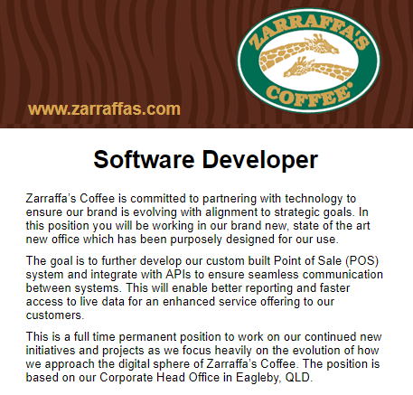

Lewis Martin
Home |
Profile |
Future |
Project Idea
Future
This page decribes what my future has in store for me, from my Ideal job to my to my future goals
Ideal Job
| I’m not too sure about what my exact ideal job would be, but I do know I want to do something within the IT industry, hopefully as my studies progress
I’ll find something that suits me. A mixture of programming and setting up IT systems sounds very appealing to me but most of all I want to be able to enjoy the work I do and feel
proud or accomplished with whatever work I produce.
|

Why is this appealing?
This job requires me to get out of my comfort zone and work with an IT team with directions from an IT manager. The role involves developing IT infrastructure to allow continued
growth to the business and automate the businesses systems, while at the same time enhancing the digital footprint of the business. I am very interested in this position as it
involves work with an IT team which I would like to be a part of throughout my career and Full Stack Development which I am very interested in.
Required skills
This role requires experience with multiple languages and platforms, from C#, SQL server and JavaScript to .Net framework and ASP.NET, knowledge of source control and Microsoft
Azure platform is also desirable. 3-5 year of commercial experience in full stack is desired with demonstratable success in software projects.
Current Skills
I currently have 1 year of experience in full stack development but no commercial experience. I am quite efficient in using languages such as; C# and JavaScript and have previous
experience with SQL Server. I also possess a Certificate IV in programming which could be very beneficial in acquiring a job such as this.
Plan for success
I plan to develop my skills using all the required languages and platforms mentioned in the above job advertisement during my three-year tenure at RMIT completing my Bachelor of
Information Technology. I plan to use Github and this personal website to show off any projects that I develop during my carrer within IT. During or after my studies I plan to find a
graduate job within the IT industry to develop my skills further and give me the required experience to acquire a job such as the one above.
|